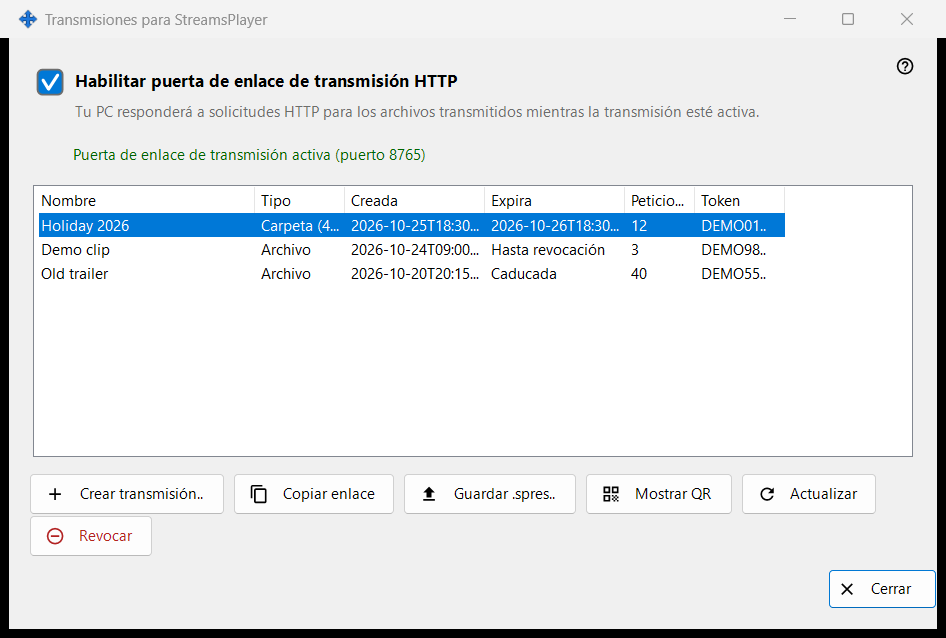
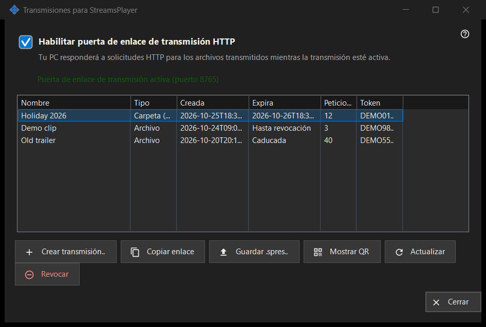

Transmisiones para StreamsPlayer
Para qué sirve
Gestiona las transmisiones HTTP de archivos multimedia y carpetas que este PC ofrece a la aplicación StreamsPlayer. Se abre desde el botón «Transmisiones..» o el elemento del menú de añadir de la ventana principal de Share Manager, que solo aparecen cuando el servicio de uso compartido informa de que admite transmisiones. Un inicio con una ruta abre la ventana y va directamente al cuadro «Crear transmisión» para esa ruta.


En este orden
- Marca «Habilitar puerta de enlace de transmisión HTTP» o, simplemente, crea una transmisión, lo que enciende la puerta de enlace.
- Pulsa «Crear transmisión..», elige el archivo multimedia, define el título, la duración y la opción de internet, y pulsa «Transmitir».
- El enlace se copia al portapapeles.
- Selecciona una fila y usa «Copiar enlace», «Guardar .spres..» o «Mostrar QR» para entregar la transmisión a un dispositivo.
- «Revocar» una transmisión cuando ya no se necesite.
Los elementos
Interruptor de la puerta de enlace
La casilla activa o desactiva la puerta de enlace HTTP. La línea bajo ella dice «La puerta de enlace de transmisión está desactivada» o «Puerta de enlace de transmisión activa (puerto N)». Mientras la puerta de enlace está activa, este PC responde a las solicitudes HTTP de los archivos de las transmisiones. Si la puerta de enlace no puede iniciarse (puerto, cortafuegos), la casilla vuelve a su estado real y el motivo aparece en una línea roja debajo; una negativa nunca abre un cuadro de diálogo.
Lista de transmisiones
Columnas: Nombre, Tipo (Archivo, o Carpeta con su número de elementos), Creada, Expira (una fecha, «Hasta revocación» o «Caducada»), Peticiones y Token, que muestra solo los seis primeros caracteres. La lista se relee sola cada 5 segundos. Un doble clic en una fila copia su enlace.
Crear transmisión..
Pide un archivo multimedia y abre el cuadro «Crear transmisión». Cuando lo aceptas, la puerta de enlace se enciende si hace falta, se crea la transmisión y su enlace se copia al portapapeles con marcadores de privacidad; un mensaje confirma la copia.
Actualizar y Revocar
«Actualizar» solo está disponible para la transmisión de una carpeta y pide al servicio que la actualice; un mensaje lo confirma. «Revocar» funciona en cualquier fila y pregunta antes: «¿Revocar la transmisión X? El enlace dejará de funcionar inmediatamente.» Una transmisión revocada no se puede restaurar; crea una nueva.
Cuando la página está desactivada
Si el servicio de uso compartido no responde o no admite transmisiones, la página se desactiva sola en su sitio y la línea roja explica el motivo, por ejemplo que esta versión del servicio de transmisión está obsoleta o que no se pudo completar la acción, con los detalles en el registro.
Ajustes del gestor · Ajustes de uso compartido SFTP · Ajustes del servidor de intercambio